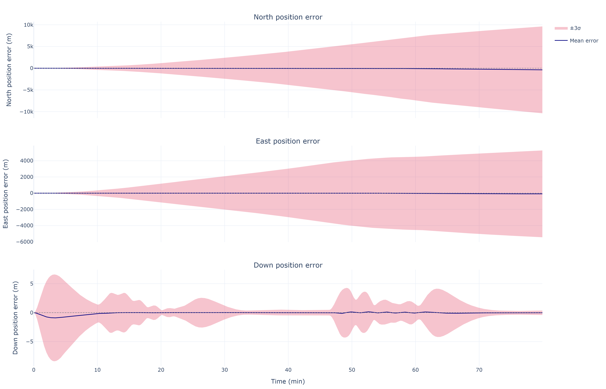
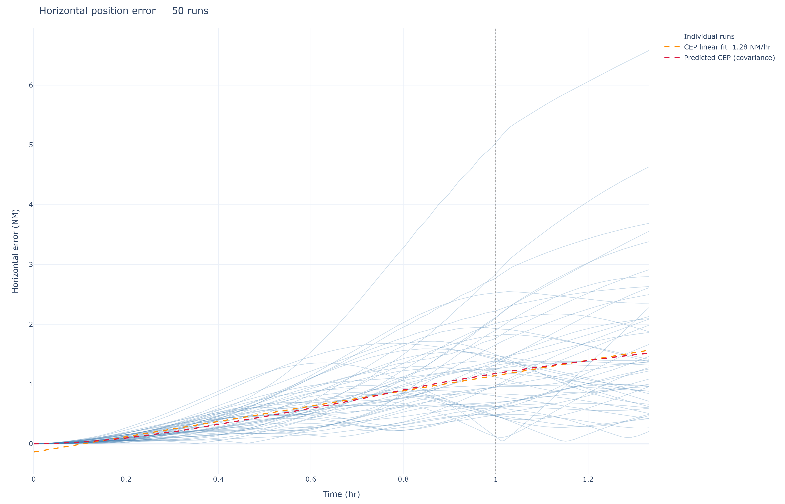

Monte Carlo evaluation¶
One simulated flight shows one possible outcome of one set of sensor errors. To say how good a navigator is, you need the spread of outcomes over all the errors its IMU might have. ins_sim estimates that spread empirically: it flies the same truth trajectory many times, each time with an independent draw of every sensor and alignment error, and summarizes the ensemble with statistics such as ±3σ bands and the CEP. Every results tab in the GUI is such a summary, and the GUI's Monte Carlo iterations setting is the number of trials.
Key results
- Each trial flies the same truth with an independent draw of the initial alignment error and of every gyro and accelerometer error, through the full nonlinear navigator.
- Errors are the estimate minus the truth, resolved in NED at the true position.
- At every sample the trials are summarized as a mean with ±3σ bands, the CEP (the median horizontal error) and the 95th percentile.
- With \(N\) trials, an estimated σ is uncertain by about \(1/\sqrt{2(N - 1)}\): 10% for 50 trials.
Physical picture¶
flowchart TD
SEED["Seed"] --> T1["Trial 1"]
SEED --> T2["Trial 2"]
SEED --> TN["Trial N"]
T1 --> AL["Alignment error"]
T1 --> IMU["IMU errors"]
IMU --> GY["Gyro triad"]
IMU --> AC["Accelerometer triad"]The navigation error of an INS is random: it depends on the particular biases, noise and alignment error of a particular run. Running many trials turns that randomness into a distribution. The spread of that distribution at each moment is the simulator's measure of performance, and how it grows with time is the IMU's signature.
Each trial gets its own random stream, split again for each error source. Every number a trial draws therefore depends only on the seed and on which trial and source it belongs to.
The statistics¶
Errors¶
Each trial's errors are formed exactly as defined on Notation & conventions: the attitude error \(\delta\psivec{nb}{n}\) (North tilt, East tilt, heading), the velocity error \(\delta\vvec{eb}{n}\), and the position error \(\delta\rvec{eb}{n}\) in metres along North, East and Down at the true position.
Mean and ±3σ bands¶
For any error component \(x\), with \(x_i(t)\) its value in trial \(i\):
where \(N\) is the number of trials, \(\bar x\) the ensemble mean and \(s\) the sample standard deviation. The Attitude Errors, Velocity Errors and Position Errors tabs draw \(\bar x\) and the band \(\bar x \pm 3s\). For a normally distributed error the band holds 99.7% of trials. Together, the three components' spreads are the diagonal of the empirical covariance
CEP and percentiles¶
The horizontal radial error of trial \(i\) is \(\rho_i(t) = \sqrt{\delta r_{N,i}^2 + \delta r_{E,i}^2}\). Its median across trials is the circular error probable:
Half of the trials lie inside a circle of that radius. The CEP tab fits a straight line to the CEP over the first hour; its slope, in nautical miles per hour, is the usual one-number figure of merit for an INS. The 95th percentile of the 3-D error \(|\delta\rvec{eb}{n}|\) draws the error tube of the 3D Trajectory tab, and that of the horizontal error the envelope on the Map.
For a circular normal distribution with spread \(\sigma\) on each axis, \(\mathrm{CEP} = \sigma\sqrt{2\ln 2} \approx 1.18\,\sigma\). ins_sim takes the median of the trials instead, which assumes nothing about the distribution.
Sampling uncertainty¶
Statistics from \(N\) trials are estimates. The relative uncertainty of an estimated standard deviation is about \(1/\sqrt{2(N - 1)}\):
| Trials \(N\) | 10 | 20 | 50 | 100 | 200 |
|---|---|---|---|---|---|
| Uncertainty of \(s\) | 24% | 16% | 10% | 7% | 5% |
Tails converge more slowly than the middle. With 50 trials the 95th percentile rests on the two or three largest errors, so the error tube settles only with more trials than the CEP needs.
Random streams¶
The random numbers come from a tree of independent streams, spawned from the seed: one per trial, then one per error source within the trial (the alignment error, the gyro triad, the accelerometer triad). Each triad draws its error terms in a fixed order (see IMU error model). Two properties follow:
- A trial's errors do not depend on how many trials run: trial 7 is the same whether you run 10 trials or 100.
- Changing one error source leaves every other source's realization unchanged. Two runs with the same seed and specs that differ only in, say, the accelerometer bias therefore differ only because of that bias. These common random numbers make comparisons sharp with few trials.
The GUI and the command-line tool both use the seed 42, so the same settings always give the same results.
As implemented¶
1. One trial. Draw the alignment error, start the navigator from the truth with that attitude error, generate the noisy IMU outputs and navigate:
trial_rngs = np.random.default_rng(seed).spawn(n_trials)
C_b_n0 = truth.C_b_n[0]
n_done = n_trials
for i, trial_rng in enumerate(trial_rngs):
if should_stop is not None and should_stop():
n_done = i
break
rng_alignment, rng_imu, rng_baro = trial_rng.spawn(3)
# Per-trial initial-alignment error delta_psi_nb^n: small NED tilts
# plus an azimuth error, applied to the truth attitude (zero-mean
# draws; exact truth initialization when the alignment stds are 0).
delta_psi_nb_n0 = draw_initial_misalignment(spec, rng_alignment)
est_C_b_n0 = Rot.from_rotvec(delta_psi_nb_n0) * C_b_n0
init_state = NavState(
truth.L_b[0], truth.lambda_b[0], truth.h_b[0],
truth.v_eb_n[0].copy(),
est_C_b_n0.as_quat(), # pyright: ignore[reportCallIssue]
)
meas_omega_ib_b, meas_f_ib_b = generate_imu_samples(truth, spec, rng_imu)
if not baro_aiding:
meas_h_b = None # free-inertial
elif spec.baro is None:
meas_h_b = truth.h_b # ideal barometer
else:
meas_h_b = generate_baro_samples(truth, spec.baro, rng_baro)
nav = strapdown_navgrade(
meas_omega_ib_b, meas_f_ib_b, init_state, truth.tau_i,
meas_h_b=meas_h_b, mechanization=mechanization)
2. Position error in metres, at the true position:
return np.stack([
(R_N + h_b) * delta_L_b,
(R_E + h_b) * np.cos(L_b) * delta_lambda_b,
-delta_h_b,
], axis=-1)
3. Mean and spread for the bands:
mean = err_runs.mean(axis=0)
# Unbiased (N−1) spread; a single trial has no spread to estimate.
sigma = err_runs.std(axis=0, ddof=1 if len(err_runs) > 1 else 0)
4. CEP and its growth rate. The horizontal errors are in nautical miles and the time in hours:
cep = np.percentile(horiz_err_nm, 50, axis=0)
mask = t_hr <= 1.0
if mask.sum() >= 2:
coeffs = np.polyfit(t_hr[mask], cep[mask], 1)
5. Percentile envelope of the 3-D error:
return np.percentile(np.linalg.norm(delta_r_eb_n, axis=2), q, axis=0)
What it looks like¶

The Position Errors tab for 50 trials of the packaged mission with the navigation-grade spec. The mean error stays near zero, because every error source is zero-mean across trials, while the ±3σ bands grow to about 10 km North and 5 km East by the end of the 80-minute mission. The Down band levels off at about ±250 m once the climb ends: it is the barometer's own error, which the barometric loop passes into the height.

The CEP tab for the same run: every trial's horizontal error, and the straight-line fit to the CEP over the first hour, 1.3 nmi/h. That is close to what the gyro biases alone predict: the turn-on and in-run biases add up to about 0.02 °/h per axis, and each 0.01 °/h gives 0.6 nmi/h (see INS error model).
Assumptions & limitations¶
Assumptions & limitations
- Costly and noisy. Every statistic comes from nonlinear trials, so it costs \(N\) full simulations, and it is only as accurate as \(N\) allows. The covariance analysis predicts the same spreads in one pass, without sampling noise, as long as the errors stay small; the app draws its prediction as dashed lines.
- Sampling error. Bands from a few trials are noisy, and tails need more trials than medians; see the table above.
- One trajectory. Every trial flies the same truth trajectory. Only the sensor and alignment errors vary.
- Only the modelled errors. A trial contains only the error sources on the IMU error model page, and the barometer's on the Vertical channel page.
- Normality is not assumed, but the bands read best with it. The ±3σ bands hold 99.7% of trials only if the errors are normally distributed. The CEP and percentiles make no such assumption.
In the code¶
| Quantity | Equation | Implemented in |
|---|---|---|
| The trials | One trial per stream | run_monte_carlo, MonteCarloResult |
| Errors | \(\delta\psivec{nb}{n}\), \(\delta\vvec{eb}{n}\), \(\delta\rvec{eb}{n}\) | attitude_error, velocity_error, position_error |
| Percentile envelope | \(r_{95}(t)\) | percentile_envelope |
| Bands and CEP | \(\bar x \pm 3s\), \(\mathrm{CEP}(t)\) | _bands_figure and figure_cep in ins_sim/gui/figures.py |
This example runs 25 trials of a short flight and summarizes them the way the GUI does: mean and 3σ for each axis, the CEP and the 95th percentile. Its exact numbers depend on the random draws, so this page does not show them:
"""A small Monte Carlo run, summarized the way the GUI summarizes it."""
import numpy as np
from ins_sim.config import default_imu_spec_path
from ins_sim.evaluation.errors import position_error
from ins_sim.evaluation.monte_carlo import percentile_envelope, run_monte_carlo
from ins_sim.sensors.imu import load_imu_spec
from ins_sim.trajectory.kinematics import TruthTrajectory
from ins_sim.trajectory.spline import NEDSplinePath
# About 11 minutes at 150 m/s: 60 km north, then a gentle turn to the north-east.
path = NEDSplinePath([[0.0, 0.0, 0.0], [60e3, 0.0, 0.0], [90e3, 30e3, 0.0]])
truth = TruthTrajectory.from_spline(path, speed=150.0, tau_i=2.0)
spec = load_imu_spec(str(default_imu_spec_path()))
mc = run_monte_carlo(truth, spec, n_trials=25, seed=42)
delta_r_eb_n = position_error(mc.est_L_b, mc.est_lambda_b, mc.est_h_b,
truth.L_b, truth.lambda_b, truth.h_b)
n_trials = len(delta_r_eb_n)
final = delta_r_eb_n[:, -1, :] # every trial's error at the end
mean, sigma = final.mean(axis=0), final.std(axis=0, ddof=1)
print(f"{n_trials} trials, {truth.t[-1] / 60:.0f} min of flight. At the end:")
for axis, name in enumerate(("North", "East", "Down")):
print(f" {name:5s} error: mean {mean[axis]:7.1f} m, 3-sigma {3.0 * sigma[axis]:6.1f} m")
print(f" (each sigma is uncertain by about {100 / np.sqrt(2 * (n_trials - 1)):.0f}% "
f"with {n_trials} trials)")
horizontal = np.linalg.norm(final[:, :2], axis=1)
print(f" CEP, the median horizontal error: {np.median(horizontal):.1f} m")
print(f" 95th percentile of the 3-D error: {percentile_envelope(delta_r_eb_n, q=95)[-1]:.1f} m")